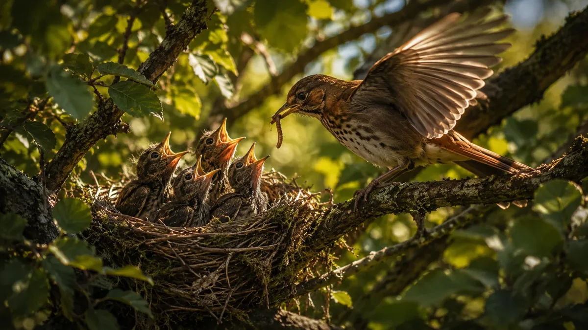

I create The Orb using a mix of image, video, voice and music tools. The choices can change from one chapter to another, but the creative decisions—story, visual direction, selection and editing—are mine. Here is how I approach the work.
Concept art and stills
I use Midjourney and ChatGPT Image 2 to explore characters, places, mood and composition. For a recurring character such as the Traveler, I compare new images with existing references so the face, clothing and overall look still belong in the same story. A strong still is a starting point, not a guarantee: each result needs checking before I use it.

Motion
Depending on the shot, I work with video tools including Kling, Runway, LTX and Seedance to bring still images into motion. I look for camera movement and character motion that support the scene, then select and edit the results into the larger story. Different chapters use different combinations; the tool does not make the final creative choices for me.
Voice and sound
ElevenLabs handles voice work when a scene calls for it, and Suno has become a fast way to sketch score ideas before committing to a final mix. Neither replaces a real performance - they're best as a way to test whether a scene's pacing actually works before investing more time in it.
Why bother explaining the pipeline?
Mostly because people ask. If you're curious about applying any of this to your own AI shorts, music, or art, that's genuinely what this blog is for - I'll keep posting real breakdowns like this one as new episodes and tracks go up.